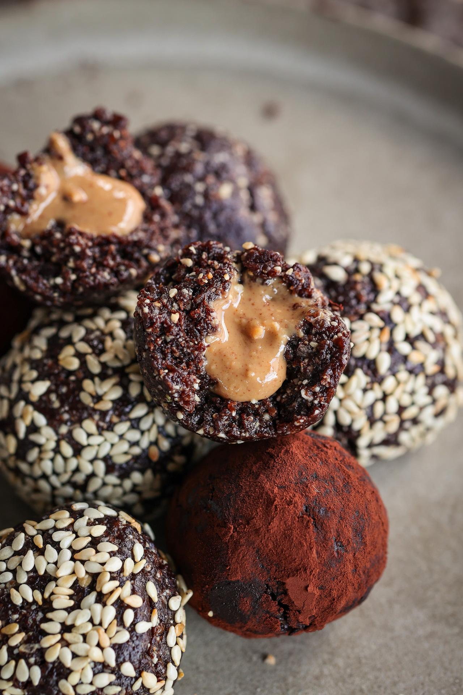

Stuffed Energy Balls

Ingredients
- 1 cup (160 g) soft dates, pits removed
- ½ cup (68 g) roasted unsalted cashews
- 2 Tbsp (13 g) Dutch processed cocoa powder
- 1 Tbsp (9 g) toasted sesame seeds
- 1 Tbsp (7 g) ground flaxseeds
- 1½ Tbsp (22 mL) peanut butter
Directions
- Add the dates, cashews, cocoa powder, sesame seeds, and flaxseeds to a food processor.
- Blend until uniform in texture and holds together when pressed between your fingers.
- Scoop 2 Tbsp of the mixture into your palm and form into a ball.
- Use your finger to create a crater in the center of the date ball.
- Dollop about ½ tsp of peanut butter into the crater.
- Cupping the filled ball, pinch the edges closed around the peanut butter.
- Roll the filled energy ball back into a sphere.
- Transfer it to a plate. Repeat with the remaining date mixture and peanut butter. If desired, coat with toasted sesame seeds or cocoa powder. Enjoy!
Storage
- Store these energy balls in the fridge in an airtight container for up to 4 days.
- Store in the freezer for up to 2 months.